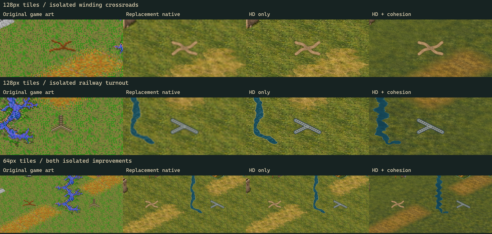

Isolated roads and railways
Four-stage gallery · Full HD district · Visibility and preservation checks · Rail connectivity checks
An isolated road is now a compact winding crossroads; an isolated railway is a three-way turnout with sleepers and continuous steel. Both have larger footprints than the previous short segments and rounded terminals well inside the tile. They indicate an improvement, without claiming a connection to adjacent tiles. Connected masks and the native selection rules are unchanged. The same artwork is used in detailed enhanced views; enhanced overview line symbols remain separate.
These crops use the unchanged district and tactical fixtures. Native stages are enlarged with nearest-neighbor sampling; HD stages are shown at their rendered pixel density.
